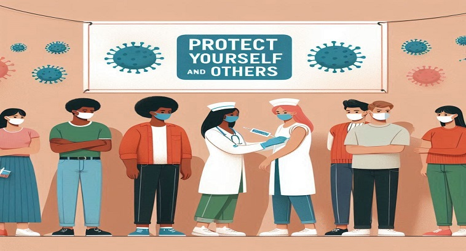

As vacinas protegem contra doenças infecciosas graves, muitas das quais podem causar complicações sérias ou até a morte. Elas estimulam o sistema imunológico a reconhecer e combater patógenos específicos, fornecendo imunidade sem causar a doença.
Proteção Comunitária (Imunidade de Rebanho)
Quando uma alta porcentagem da população é vacinada, a propagação de doenças é reduzida, protegendo aqueles que não podem ser vacinados, como recém-nascidos, pessoas com certas alergias ou condições médicas que enfraquecem o sistema imunológico.
Erradicação de Doenças
A vacinação em massa pode levar à erradicação de doenças. O exemplo mais conhecido é a varíola, erradicada globalmente graças a campanhas de vacina
Redução de Epidemias
As vacinas ajudam a prevenir surtos e epidemias de doenças contagiosas. Isso é especialmente importante em ambientes densamente povoados, como escolas e cidades.
Econômico
Prevenir doenças por meio da vacinação é muito mais econômico do que tratar as doenças. Isso reduz os custos com cuidados de saúde, internações hospitalares e perda de produtividade devido à doença.
Segurança e Eficácia
As vacinas passam por rigorosos testes clínicos antes de serem aprovadas e monitoradas continuamente quanto à segurança e eficácia. Os benefícios superam em muito os raros riscos de efeitos colaterais graves.
Responsabilidade Social

Vacinar-se é um ato de responsabilidade social. Contribui para a saúde pública e protege os membros mais vulneráveis da sociedade, ajudando a manter a saúde coletiva.